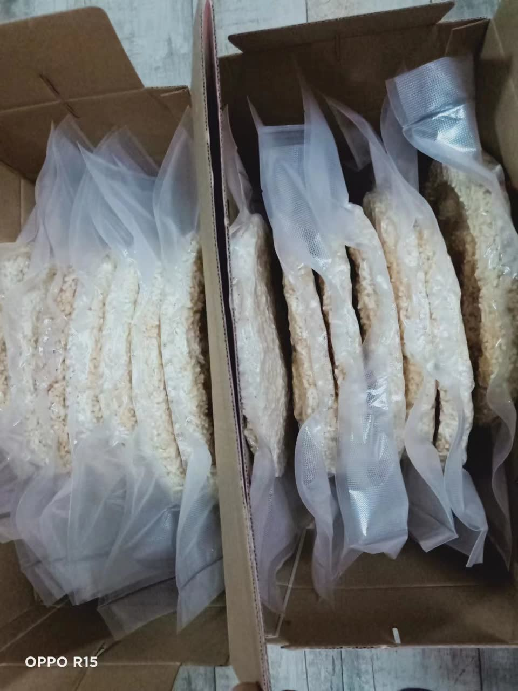
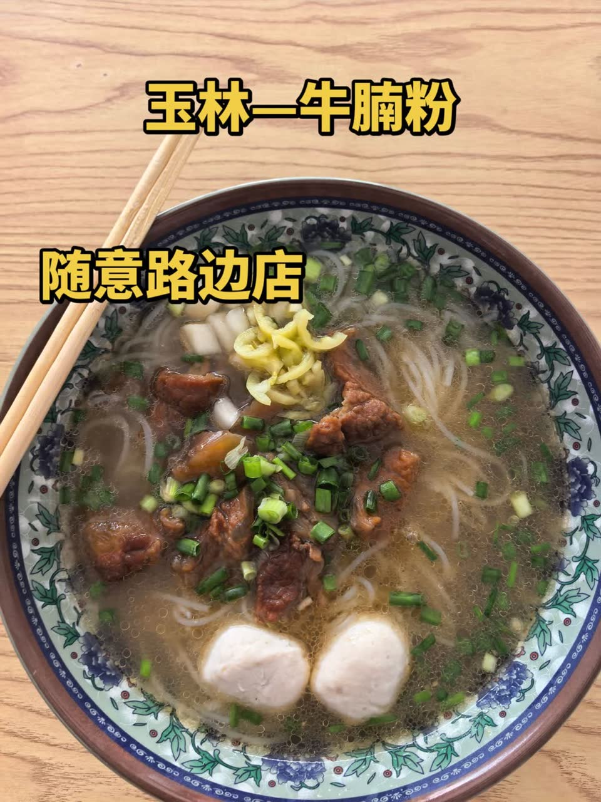
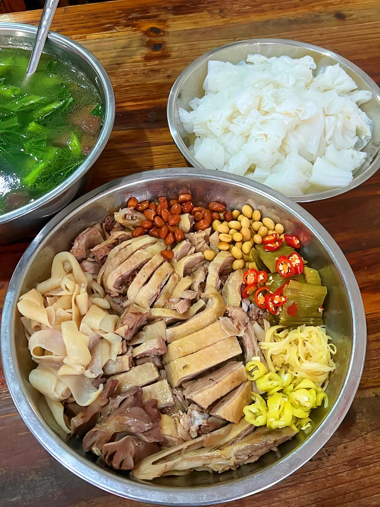

点击看大图
点击看大图
玉林牛巴
YULIN BEEF DRY腌、晾、炸、焖，反复入味。咸甜交织、越嚼越香，是离乡行囊里最常被想起的一味，也是最体面的伴手礼。
- 选料黄牛后腿精肉
- 工艺腌、晾、炸、焖多道工序
- 口感甘韧耐嚼，咸甜适口
在玉林，吃是日程表本身：天没亮粉店就开了锅，年关将至时家家户户的油锅「哗」一声炸开白散。四样吃食，四种过日子的方式。
点击看大图
腌、晾、炸、焖，反复入味。咸甜交织、越嚼越香，是离乡行囊里最常被想起的一味，也是最体面的伴手礼。

点击看大图糯米压模，晒足日光，入油锅一瞬开花。酥脆一声，是玉林人过年独有的符号——祭祖、待客、闲话家常，都少不了它。

点击看大图一碗牛腩粉，记住一座城。牛骨老汤打底，牛腩焖到软烂，再佐一勺酸豆角。嗦粉的声音，就是玉林清晨的开场白。

点击看大图白切上桌，佐生抽、酸梅与姜葱蓉。皮爽肉嫩，清鲜不腻，裹着的是老字号里三十年的市井烟火，也是玉林最响亮的一张美食名片。